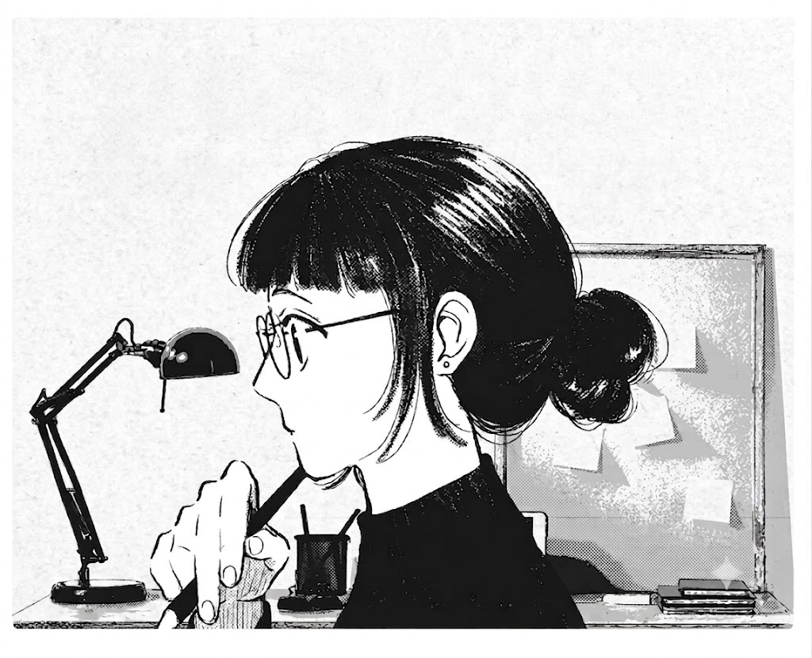

Exploring Web Development, UI/UX Design, and Creative Problem Solving.
Explore More
Hi, I'm Nida — a curious learner who believes in continuous growth and embracing new experiences.
Through internships, workshops, networking sessions, and personal development programs, I've had the opportunity to explore different perspectives, build new skills, and challenge myself beyond my comfort zone. Each experience has helped me become more confident, adaptable, and open to learning.
I enjoy meeting new people, discovering new ideas, and taking on opportunities that contribute to my personal and professional development. While I'm continuously working on improving my communication and leadership abilities, I believe that growth comes from consistent effort, learning, and meaningful experiences.
This portfolio reflects my journey, the lessons I've learned, and my commitment to becoming the best version of myself every day — built alongside my work in web development and UI/UX design.
My first website project , Solace & Brew is a collaborative academic project developed to strengthen our understanding of web development, user experience, and project execution. The project focused on creating an engaging digital platform while applying modern design principles and technical skills learned throughout our coursework.
Through this project, I gained hands-on experience in designing interfaces, structuring web pages, implementing responsive layouts, and working effectively within a team environment. Solace & Brew helped me develop a deeper understanding of transforming ideas into functional digital solutions.
Internship group project focused on property listings and user-friendly design.Homigo Homigo is a web-based House Rent & Buy Portal developed as a team project during my Full-Stack Development Internship. The platform was designed to simplify property discovery by allowing users to explore available properties through a clean and intuitive interface. Working on Homigo provided valuable experience in full-stack development, project collaboration, and real-world problem-solving. The project involved designing user-friendly interfaces, planning application features, and integrating frontend and backend components to create a practical property management solution.
Experience Journey
2024 — Leadership Experience
Served as Class Leader during Higher Secondary Education, representing students and facilitating communication between classmates and faculty. This role strengthened my leadership, responsibility, teamwork, and communication skills.
2025 — Workshops & Professional Development
Actively participated in workshops, training programs, and development sessions focused on communication, networking, teamwork, and personal growth. These experiences helped me build confidence, improve interpersonal skills, and develop a professional mindset.
2026 — Academic Projects
Developed Solace and Solace & Brew as part of my academic journey, applying web development fundamentals, user-centered design principles, and collaborative problem-solving. These projects strengthened my understanding of project planning, interface design, and transforming ideas into functional digital solutions.
June 8 – June 20, 2026 — Full-Stack Development Internship
Completed a Full-Stack Development Internship focused on Python Django and modern web development practices. During the internship, I gained hands-on experience in frontend and backend development, responsive design, database integration, teamwork, and project implementation.
As part of the internship, I collaborated with a team to develop Homigo, a House Rent & Buy Portal designed to simplify property discovery and management. The project involved designing user-friendly interfaces, planning features, and integrating frontend and backend components to create a practical real-world solution.
Skills Gained:
• Python & Django Development
• HTML, CSS & JavaScript
• Responsive Web Design
• Team Collaboration
• Project Planning
• Communication & Networking
• Problem Solving
• Leadership